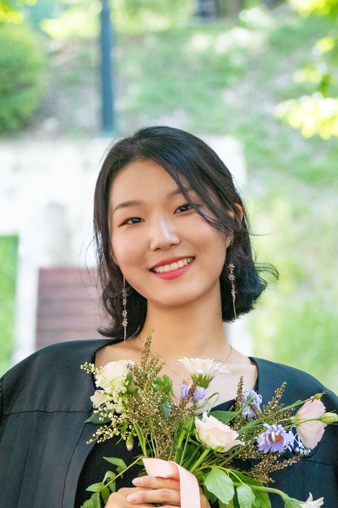

Integrated M.S. and Ph.D. Student in Brain & Cognitive Sciences
Exploring the point where neuroscience and AI collide — teaching machines to read the brain's own language, and using what they learn to understand how any one person, specifically, thinks. I'm an Integrated M.S./Ph.D. student at Seoul National University (Connectome Lab), currently a Visiting Student Research Collaborator at Princeton University in Hasson Lab.

I'm drawn to questions that live at the collision points between fields. At Seoul National University (Connectome Lab, advised by Prof. Jiook Cha), I've been a core contributor to DIVER, a foundation model for EEG and intracranial EEG — learning general-purpose representations of neural activity that transfer across subjects and tasks.
As a Visiting Student Research Collaborator at Princeton University (Hasson Lab, Department of Psychology), I'm extending that work toward language decoding from brain signals — testing how well a model can move between brain activity and language, and capturing how any one person's brain processes it.
I paired a Life Science major with a Computer Science Engineering minor at POSTECH so I'd have both the biological grounding and the engineering toolkit these questions need — and that's still how I work today.
Princeton University
Apr 2026 - Sep 2026
Seoul National University
Sep 2024 - Present
POSTECH
Mar 2019 - Aug 2024
University of Illinois Urbana-Champaign
Jan 2023 - May 2023
National fellowship from Korea's Ministry of Education & KOSAF for graduate researchers in science and engineering identified as future world-leading scientists — one of 120 graduate scholars selected nationwide in 2026
Mar 2026 - PresentFull-ride national scholarship (KOSAF) for future scientists and engineers
Mar 2019 - Aug 2024Awarded to top undergraduate researchers for outstanding achievement
Apr 2021IEEE MLSP 2026 (accepted)
Under review
Computers in biology and medicine, 192, 110248 (2025)
DOIIn progress
In progress
CCN 2026 (Poster, accepted)
Paper PosterICML 2025 Workshop on GenBio (Spotlight)
arXivOHBM 2025 (Poster)
PosterSMB 2024 (Poster)
DOIOpensource cloud computing and AI service company
Conducted research on exploring the diagnostic potential of EEG theta power and interhemispheric correlation of temporal lobe activities in Alzheimer's Disease through random forest analysis.
Seoul National University
• Language and the Brain
• Developmental Cognitive Neuroscience
• Principles of Neuroscience
• EEG Analysis
• Neuroimaging
• Machine Learning and Deep Learning
• Computer Vision
• Natural Language Processing
• Data Science
Brain Cognitive Science Community
Sep 2021 - Feb 2023
Led the Brain Cognitive Science Community, planning and organizing semestral conferences. Developed skills in academic event coordination and member communication.
POSTECH Life Science
Sep 2020 - Jun 2022
Taught General Life Science to freshmen through the Student Mentoring Program, helping new students transition to university-level biology.
I'm always interested in collaborations, research opportunities, or just connecting with fellow researchers!
ahhyun724@snu.ac.kr
@yahyunee
Ahhyun Lucy Lee
Princeton, NJ (Apr - Sep 2026)
Seoul, Korea